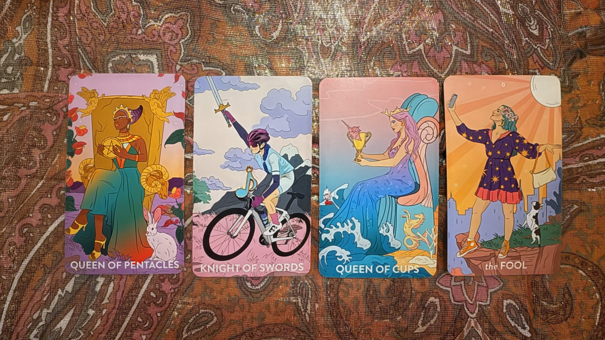
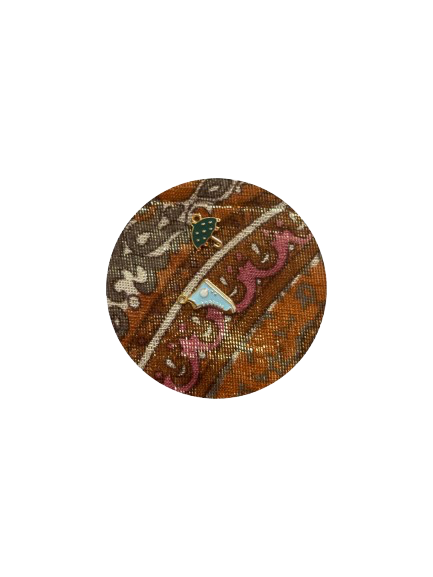

Current Block
You're stuck in relation to creativity, passion, or ambition. You may be wanting to start something new but feel you lack direction or don't have the support you need to begin. There's uncertainty about which path to take.
Start by listening to the full reading to understand your paths forward.
You're stuck in relation to creativity, passion, or ambition. You may be wanting to start something new but feel you lack direction or don't have the support you need to begin. There's uncertainty about which path to take.
You don't feel you have the authority or credentials to move forward. There's an element of imposter syndrome—questioning "who am I to start this, do this, or create this?" You're doubting whether you have the right to claim this space or venture.
Traditional & Family-Connected
This path is more traditional, possibly connected to your family or something you're already quite familiar with. It might not be your first choice—this feels like the backup plan, something you'd do if something else didn't work out.
There's an element of returning to something that used to be familiar to you, along with an ending or closure (represented by a broken heart charm). This could mean returning to a way things used to be, potentially even with Carl if you've known each other a long time.
Brand New & Collaborative
This path is a leap of faith—something completely new. It involves collaboration with other people, including at least one other woman. The person(s) you collaborate with could be an Earth sign (Capricorn, Virgo, Taurus), Water sign (Cancer, Scorpio, Pisces), or Air sign (Libra, Aquarius, Gemini).
You'd likely be collaborating with three other people total. This path involves a cycle or something people can do over and over. There's an exchange happening—if these people aren't directly collaborating with you, you'll be exchanging something with them. This may also involve a gift, either an ability you have or a gift you're given.

The cards reveal Path B's collaborative nature and cyclical energy. This is the path of new beginnings and working with others toward a shared vision.

The shoe and umbrella charms appeared as guidance for choosing your path. These symbols bring to mind the song "But I Do Love You" by LeAnn Rimes—there may be insight for you in those lyrics. The umbrella suggests protection during uncertainty, while the shoe represents the journey forward.
You're at a crossroads between the familiar and the unknown. Path A offers safety and tradition, while Path B offers growth and collaboration. The imposter syndrome you're experiencing is normal when standing at the edge of something new.
Trust that you don't need to force a decision. The universe will guide you to the right path. Your job is to stay open, release the need for control, and trust your intuition when the opportunity presents itself.
Need more clarity on your path?
Book Another ReadingLink to channeled song
Link on YouTube